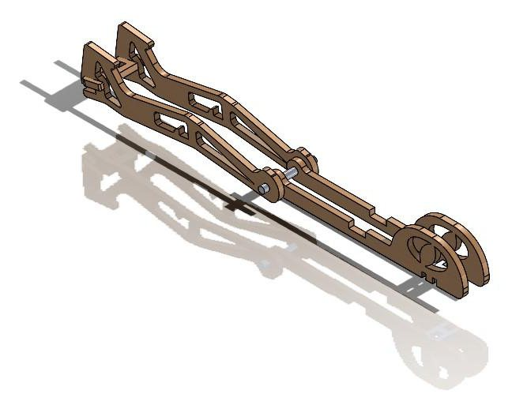
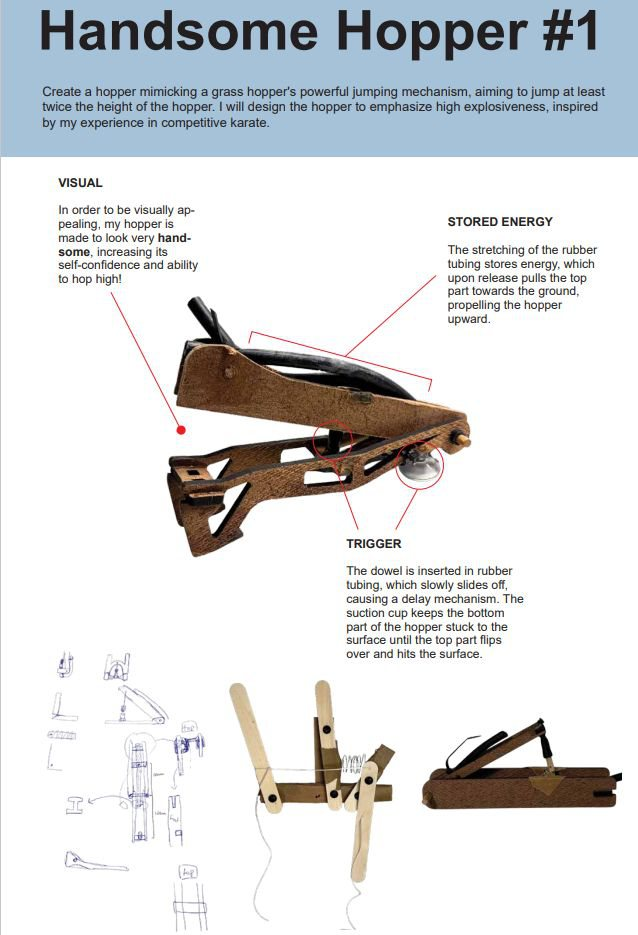
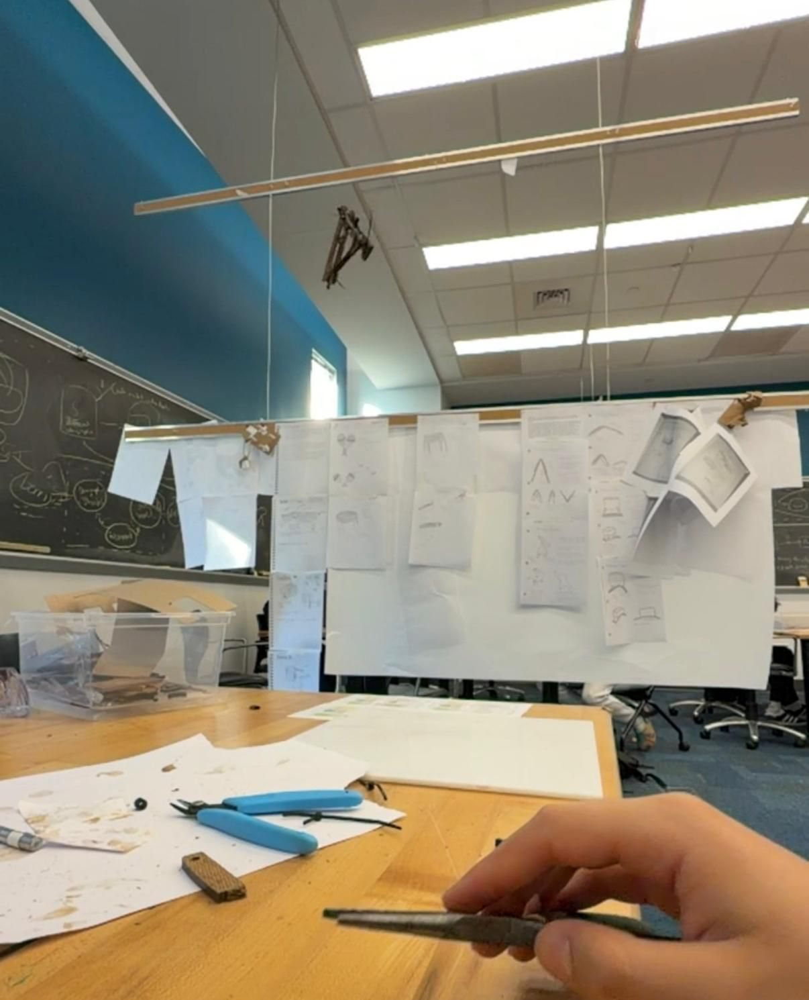

Biomimetic Hopping Mechanism
A hopping mechanism based on elastic energy storage observed in grasshopper legs.
Overview
From September to October 2025, I designed and manufactured a hopping mechanism based on the elastic energy storage observed in grasshopper legs. The goal was to hop more than 5 ft repeatably, using sustainable materials. It was the first project of my first semester at Olin, for the class Design Nature.
My role
This was an individual project, so I did everything: the concept, the CAD, building, and testing. It's where I learned to CAD, in SOLIDWORKS.
Design & build
Like a grasshopper leg, the hopper stores elastic energy and releases it all at once. Stretched rubber tubing stores the energy; when released, it pulls the top part toward the ground, propelling the hopper upward. The trigger is a dowel inserted in the rubber tubing that slowly slides off, creating a delay, while a suction cup holds the bottom part to the surface until the top part flips over and hits it.
I modeled the kinematics and geometry in SOLIDWORKS, iterating for hop stability and repeatability.

I fabricated the prototype using the laser cutter, band saw, and drill press, then refined the geometry based on physical testing. Throughout, I focused on environmental sustainability and a low carbon footprint. I made the final hopper from Eucaboard, because it's easy to fabricate and has a low environmental impact, with rubber tubing to store the energy and a suction cup and a dowel in the tubing as the trigger. Testing changed the shape of the parts to make them stronger and easier to assemble.

Results
The hopper achieved repeatable hops of more than 5 ft, meeting the goal.
What I learned
I learned about rapid prototyping: building many iterations and testing them extensively, while keeping a separate final hopper that I didn't test on, so I'd have a working one for demo day. I also learned to use the basic shop tools, like the band saw, sander, and drill press, along with CAD in SOLIDWORKS.